Chapter 7: Workshop 1 - Campus Café (Build → Push → Redeploy)
Overview
This is the capstone workshop of the course. You will build a complete full-stack application — a Campus Café food ordering system — using everything you learned in Chapters 4, 5, and 6:
- A custom Dockerfile to build your own API image (Chapter 4)
- Docker Compose to orchestrate 4 services (Chapter 5)
- Docker Hub push/pull and container isolation concepts (Chapter 6)
Then you will ship it: push your images to Docker Hub, pull them on a Windows PC with Docker Desktop, deploy the exact same application again, and finally discuss what you observed.
SERVER (CentOS Stream 10) DOCKER HUB YOUR PC (Windows)
┌──────────────────────────┐ ┌────────────────┐ ┌───────────────────────┐
│ docker compose up --build│ push │ │ pull │ docker compose pull │
│ │ ───────► │ your-account/ │ ───────► │ docker compose up -d │
│ Campus Café RUNNING │ │ cafe-api │ │ Campus Café RUNNING │
│ from Dockerfiles │ ◄───── │ cafe-web │ │ from pre-built images │
└──────────────────────────┘ └────────────────┘ └───────────────────────┘
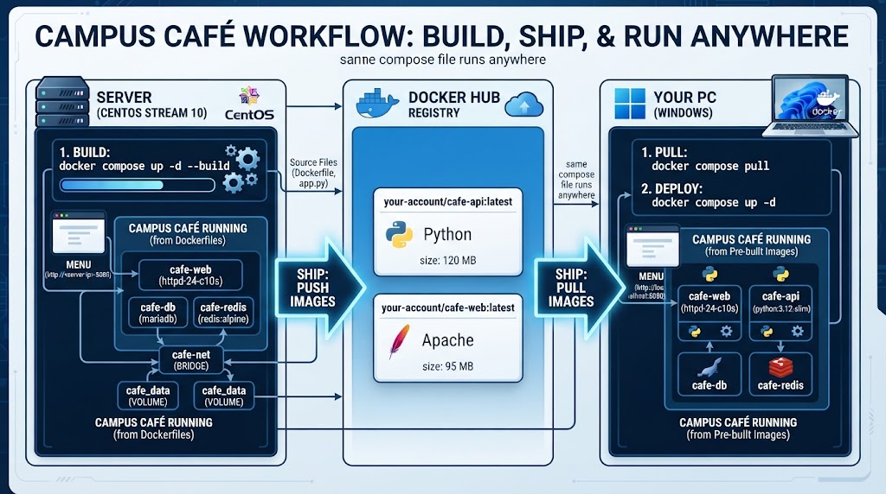
Objectives
- Can build a multi-service application with a custom
Dockerfile+docker-compose.yaml - Can configure a private bridge network, named volume, health check, and resource limits
- Can tag and push custom images to Docker Hub
- Can pull pre-built images and redeploy the application on a different machine
- Can explain why "the same compose file runs anywhere"
Assignment: Create Student's Submission along tutorial
- Student will submit screen captures according to each Task in the tutorial.
- Student will generate their own submission version.
- Part D (Discussion) written answers are part of the submission.
7.1 Application Architecture
All 4 services run inside one Compose project on a custom bridge network called cafe-net.
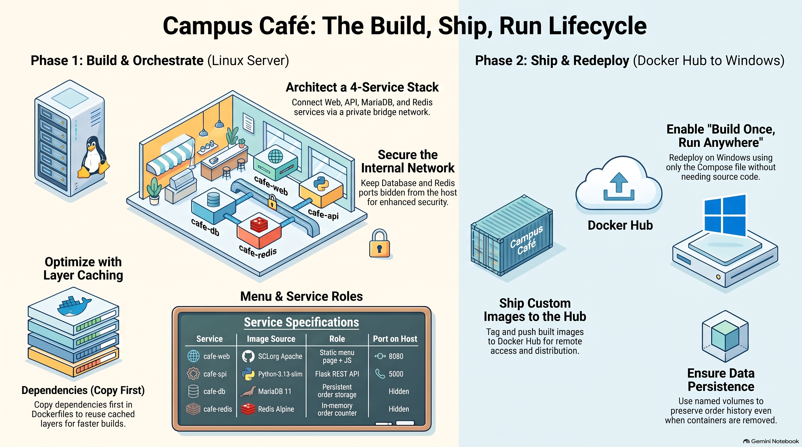
| Service | Image / Build | Role | Published Port |
|---|---|---|---|
cafe-web |
built from quay.io/sclorg/httpd-24-c10s |
static menu page + JavaScript that calls the API | 8080 |
cafe-api |
built from python:3.12-slim (your Dockerfile) |
Flask REST API: menu, place order, health | 5000 |
cafe-db |
quay.io/sclorg/mariadb-118-c10s |
stores orders (persistent named volume) | not published |
cafe-redis |
redis:alpine |
counts total orders served | not published |
Browser
│ http://<server-ip>:8080
▼
cafe-web :8080 (static menu page + JS)
│ fetch http://<server-ip>:5000/api/...
▼
cafe-api :5000 (Flask)
│ │
▼ ▼
cafe-db (3306) cafe-redis (6379)
MariaDB volume in-memory counter
● Both run INSIDE the cafe-net bridge
● Only cafe-web and cafe-api are reachable from the host
Note:
cafe-dbandcafe-redishave noports:mapping. Other containers reach them using their service name as a DNS name oncafe-net(e.g.,cafe-db:3306). Only the two user-facing services are published to the host.
7.2 Part A - Build & Run on the Linux Server
Environment: CentOS Stream 10 server with Docker installed (rootless mode), same machine used in Chapters 4–6.
Step 1: Create the project folder structure
mkdir -p ~/cafe-app/cafe-api ~/cafe-app/cafe-web
cd ~/cafe-app
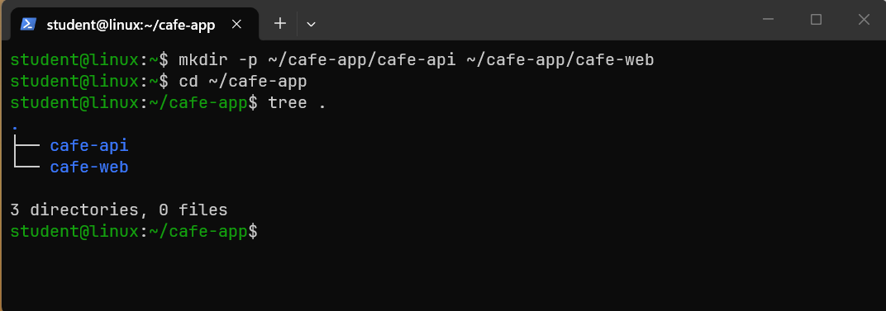
Project structure you will create:
cafe-app/
├── cafe-api/
│ ├── Dockerfile
│ ├── app.py
│ ├── requirements.txt
│ └── .dockerignore
├── cafe-web/
│ ├── Dockerfile
│ └── index.html
├── docker-compose.yaml
└── .env
Step 2: Create the API (your own Dockerfile)
Note Student have to becareful the location of created file
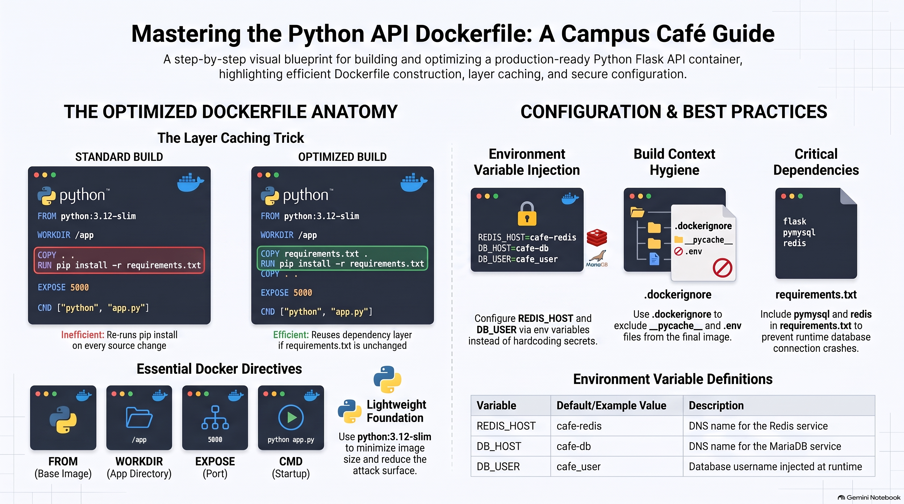
2.1 requirements.txt
cat > cafe-api/requirements.txt << 'EOF'
flask
redis
pymysql
flask-cors
EOF
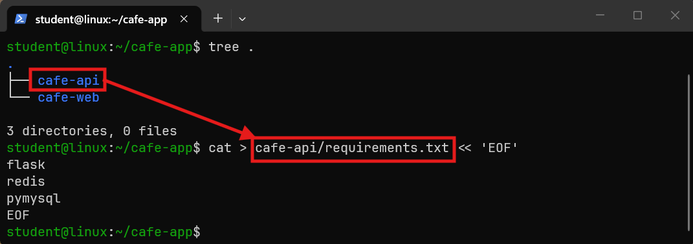
Note: This time we remember the lesson from Chapter 5's Flask task — the
redispackage is in the file, and we also addpymysql(the MariaDB/MySQL driver) so the API can write to the database without crashing.
2.2 app.py
cat > cafe-api/app.py << 'EOF'
import os
import time
import pymysql
import redis
from flask import Flask, jsonify, request
#from flask_cors import CORS
app = Flask(__name__)
#CORS(app)
cache = redis.Redis(
host=os.getenv("REDIS_HOST", "cafe-redis"),
port=int(os.getenv("REDIS_PORT", "6379")),
decode_responses=True,
)
DB_HOST = os.getenv("DB_HOST", "cafe-db")
DB_USER = os.getenv("DB_USER", "cafe_user")
DB_PASSWORD = os.getenv("DB_PASSWORD", "cafe_secret")
DB_NAME = os.getenv("DB_DATABASE", "cafe_db")
MENU = [
{"id": 1, "name": "Thai Green Curry Rice", "price": 60},
{"id": 2, "name": "Pad Thai", "price": 50},
{"id": 3, "name": "Omelette Rice", "price": 45},
{"id": 4, "name": "Thai Iced Tea", "price": 25},
{"id": 5, "name": "Espresso", "price": 40},
]
def get_conn():
return pymysql.connect(
host=DB_HOST,
user=DB_USER,
password=DB_PASSWORD,
database=DB_NAME,
autocommit=True,
)
def init_db():
# MariaDB may still be starting -> try for up to 60 seconds
for _ in range(30):
try:
conn = get_conn()
with conn.cursor() as cur:
cur.execute(
"""CREATE TABLE IF NOT EXISTS orders (
id INT AUTO_INCREMENT PRIMARY KEY,
item_name VARCHAR(100) NOT NULL,
qty INT NOT NULL,
price INT NOT NULL,
created_at TIMESTAMP DEFAULT CURRENT_TIMESTAMP
)"""
)
conn.close()
print("Database ready - orders table ensured.")
return
except Exception:
time.sleep(2)
init_db()
@app.route("/health")
def health():
return jsonify({"status": "ok"})
@app.route("/api/menu")
def menu():
return jsonify({"items": MENU})
@app.route("/api/orders/count")
def orders_count():
return jsonify({"hits": int(cache.get("hits") or 0)})
@app.route("/api/order", methods=["POST"])
def order():
data = request.get_json()
item = data.get("item")
qty = int(data.get("qty", 1))
found = next((m for m in MENU if m["name"] == item), None)
if not found:
return jsonify({"error": "menu item not found"}), 404
conn = get_conn()
with conn.cursor() as cur:
cur.execute(
"INSERT INTO orders (item_name, qty, price) VALUES (%s, %s, %s)",
(found["name"], qty, found["price"] * qty),
)
conn.close()
total = int(cache.incr("hits"))
return jsonify({"message": f"{found['name']} ordered!", "total_orders": total})
if __name__ == "__main__":
app.run(host="0.0.0.0", port=5000)
EOF
2.3 Dockerfile
cat > cafe-api/Dockerfile << 'EOF'
FROM python:3.12-slim
LABEL maintainer="student@example.com" \
summary="Campus Cafe REST API"
WORKDIR /app
# Copy requirements first to leverage Docker layer cache
COPY requirements.txt .
RUN pip install --no-cache-dir -r requirements.txt
COPY . .
EXPOSE 5000
CMD ["python", "app.py"]
EOF
Note:
COPY requirements.txt .first, thenRUN pip install, thenCOPY . .— this is the Chapter 4 layer-caching trick. When you change onlyapp.py, Docker reuses the cachedpip installlayer.
2.4 .dockerignore
cat > cafe-api/.dockerignore << 'EOF'
__pycache__
*.pyc
.env
.git
EOF
Note:
.dockerignore(Chapter 6) keeps junk out of the build context — smaller uploads, faster builds, no secrets leaked into the image.
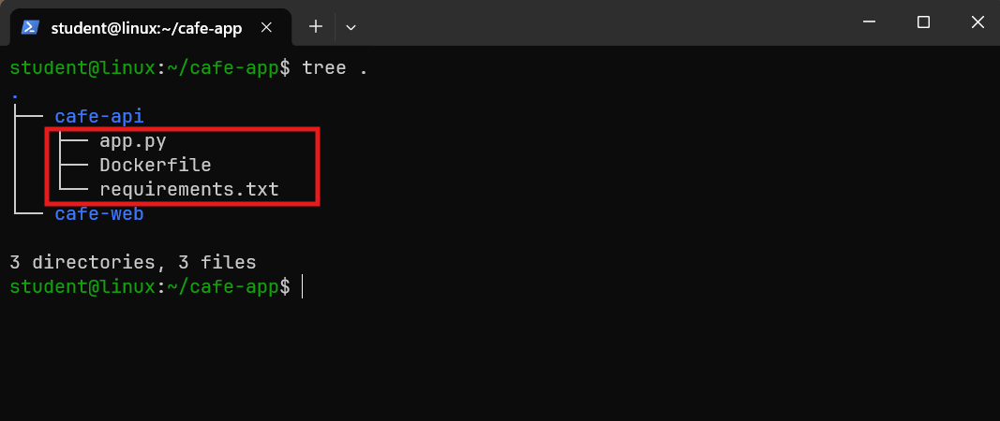
Step 3: Create the Web frontend (menu page)
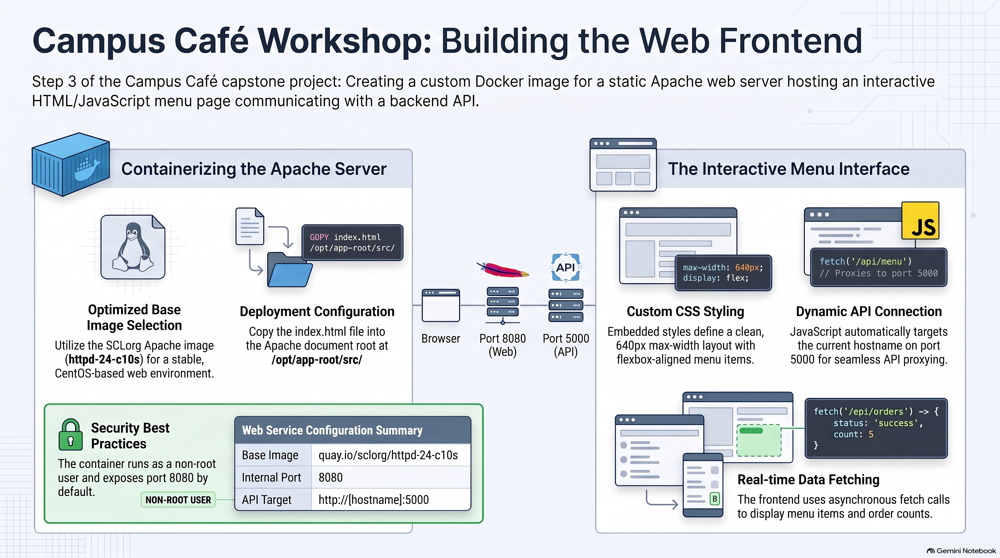
3.1 cafe-web/Dockerfile
cat > cafe-web/static.conf << 'EOF'
DocumentRoot "/opt/app-root/src"
<Directory "/opt/app-root/src">
Require all granted
</Directory>
EOF
cat > cafe-web/Dockerfile << 'EOF'
# SCLorg Apache HTTPD on CentOS Stream 10
FROM quay.io/sclorg/httpd-24-c10s
LABEL maintainer="student@example.com" \
summary="Campus Cafe static menu page"
# Copy static files into Apache's document root
COPY index.html /opt/app-root/src/
COPY static.conf /etc/httpd/conf.d/
# The base image already runs Apache as the 'default' user on port 8080
EXPOSE 8080
EOF
Note: The SCLorg
httpd-24-c10simage serves static files from/opt/app-root/srcas the non-rootdefaultuser on port8080.
3.2 cafe-web/index.html
The page automatically uses the same IP/or hostname you open it with (window.location.hostname), so the exact same file works on the server and on your PC.
cat > cafe-web/index.html << 'EOF'
<!DOCTYPE html>
<html lang="en">
<head>
<meta charset="UTF-8">
<title>Campus Cafe</title>
<style>
body { font-family: sans-serif; max-width: 640px; margin: 40px auto; color: #333; }
.item { border: 1px solid #ddd; padding: 12px; margin: 8px 0; border-radius: 8px;
display: flex; justify-content: space-between; align-items: center; }
button { padding: 8px 14px; cursor: pointer; }
#flash { color: green; font-weight: bold; }
</style>
</head>
<body>
<h1>Campus Cafe</h1>
<p>Total orders served: <strong id="count">-</strong></p>
<div id="menu"></div>
<p id="flash"></p>
<script>
const API = "http://" + window.location.hostname + ":5000";
async function refresh() {
const menuRes = await fetch(API + "/api/menu");
const data = await menuRes.json();
const box = document.getElementById("menu");
box.innerHTML = "";
data.items.forEach(item => {
const div = document.createElement("div");
div.className = "item";
div.innerHTML = "<span>" + item.name + " - " + item.price + " THB</span>";
const btn = document.createElement("button");
btn.textContent = "Order";
btn.onclick = () => order(item.name);
div.appendChild(btn);
box.appendChild(div);
});
const countRes = await (await fetch(API + "/api/orders/count")).json();
document.getElementById("count").textContent = countRes.hits;
}
async function order(name) {
await fetch(API + "/api/order", {
method: "POST",
headers: { "Content-Type": "application/json" },
body: JSON.stringify({ item: name, qty: 1 })
});
const flash = document.getElementById("flash");
flash.textContent = name + " ordered!";
refresh();
}
refresh();
</script>
</body>
</html>
EOF
Step 4: Create Compose configuration
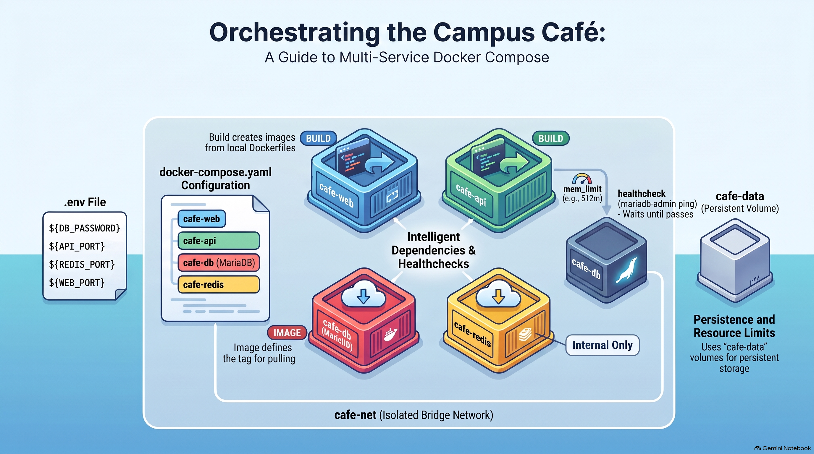
4.1 docker-compose.yaml
cat > docker-compose.yaml << 'EOF'
services:
cafe-web:
build: ./cafe-web
image: ${DOCKER_USER}/cafe-web:latest
restart: unless-stopped
ports:
- "${APP_WEB_PORT}:8080"
networks:
- cafe-net
cafe-api:
build: ./cafe-api
image: ${DOCKER_USER}/cafe-api:latest
restart: unless-stopped
ports:
- "${APP_API_PORT}:5000"
environment:
REDIS_HOST: cafe-redis
REDIS_PORT: 6379
DB_HOST: cafe-db
DB_USER: ${DB_USER}
DB_PASSWORD: ${DB_PASSWORD}
DB_DATABASE: ${DB_DATABASE}
depends_on:
cafe-db:
condition: service_healthy
cafe-redis:
condition: service_started
mem_limit: 256m
networks:
- cafe-net
cafe-db:
image: quay.io/sclorg/mariadb-118-c10s
restart: unless-stopped
environment:
MYSQL_ROOT_PASSWORD: ${MYSQL_ROOT_PASSWORD}
MYSQL_DATABASE: ${DB_DATABASE}
MYSQL_USER: ${DB_USER}
MYSQL_PASSWORD: ${DB_PASSWORD}
volumes:
- cafe_data:/var/lib/mysql
healthcheck:
test: ["CMD-SHELL", "mariadb-admin ping --silent"]
interval: 10s
timeout: 5s
retries: 10
mem_limit: 512m
networks:
- cafe-net
cafe-redis:
image: redis:alpine
restart: unless-stopped
mem_limit: 64m
networks:
- cafe-net
volumes:
cafe_data: {}
networks:
cafe-net: {}
EOF
Note on
build:+image:together (key Compose concept): -build:defines how to create the image locally (from your Dockerfile). -image:defines the name the result is tagged with — and what will be pulled later. - In Part A you rundocker compose up --build→ images are built and tagged<your-user>/cafe-*. - In Part C the source folders won't exist, sodocker compose pullfetches the exact same tag.
4.2 .env
cat > .env << 'EOF'
DOCKER_USER=your_dockerhub_username
DB_USER=cafe_user
DB_PASSWORD=cafe_secret
DB_DATABASE=cafe_db
MYSQL_ROOT_PASSWORD=root_secret
APP_WEB_PORT=8080
APP_API_PORT=5000
EOF
Note: Replace
your_dockerhub_usernamewith your real Docker Hub username now. Compose reads.envautomatically and injects these values into the file via${...}(the variable substitution you saw in Chapter 5).
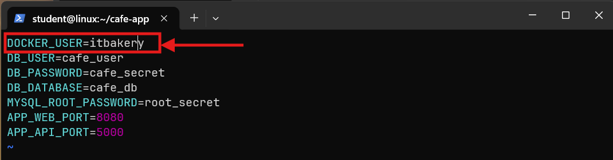
Step 5: Open firewall ports
sudo firewall-cmd --permanent --add-port=8080/tcp
sudo firewall-cmd --permanent --add-port=5000/tcp
sudo firewall-cmd --reload
sudo firewall-cmd --list-all
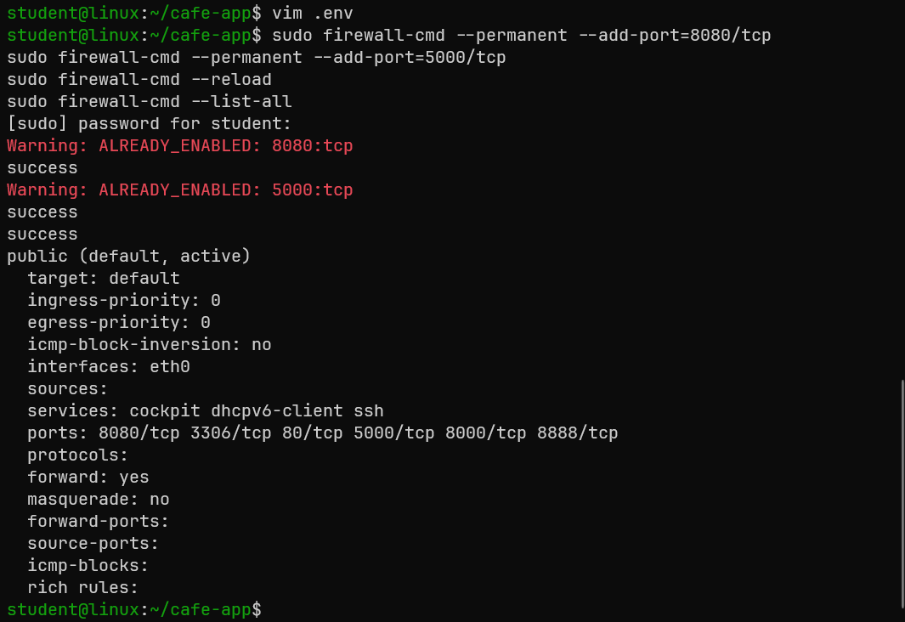
Step 6: Build and start the application
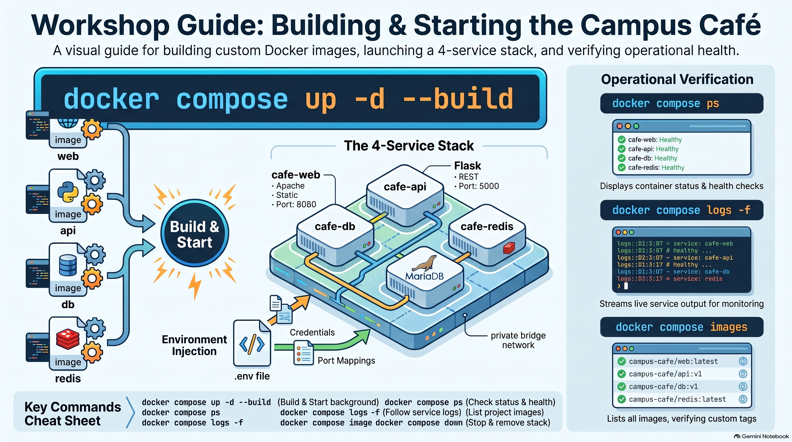
- --build for build image from source codecd ~/cafe-app
docker compose up -d --build
docker compose ps
Check file in docker
docker run --rm -it itbakery/cafe-web:latest ls -la /opt/app-root/src/
docker run --rm -it itbakery/cafe-web:latest ls -la /etc/httpd/conf.d/
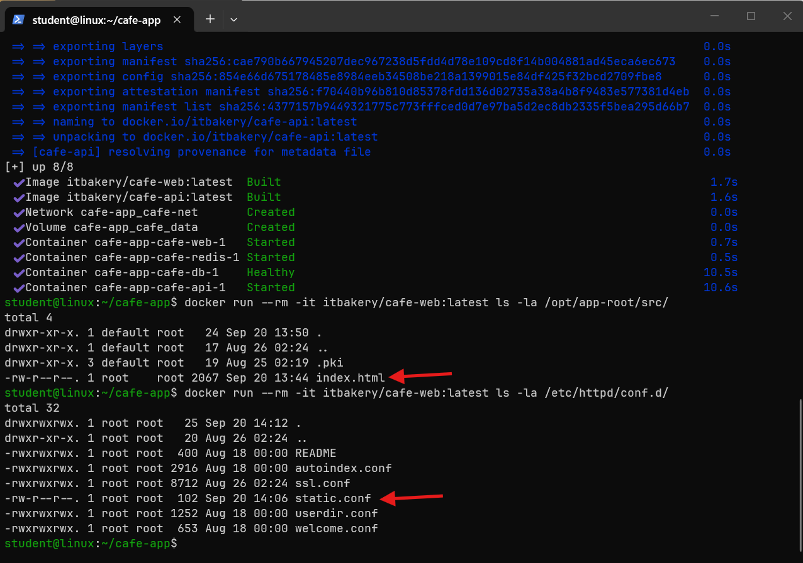
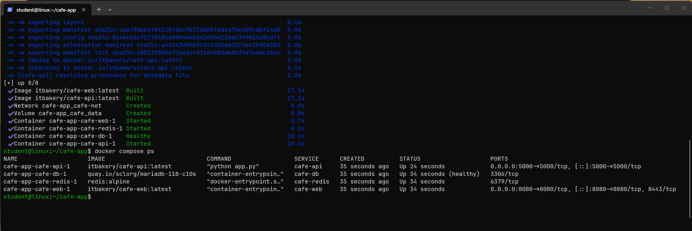
Expected: 4 services running (cafe-web, cafe-api, cafe-db, cafe-redis).
List the images your project built/uses:
docker compose images
docker image ls | grep cafe
Note:
cafe-webandcafe-apiare tagged with your Docker Hub username.cafe-dbandcafe-rediswere pulled directly fromquay.ioandhub.docker.com— you do not need to push those.
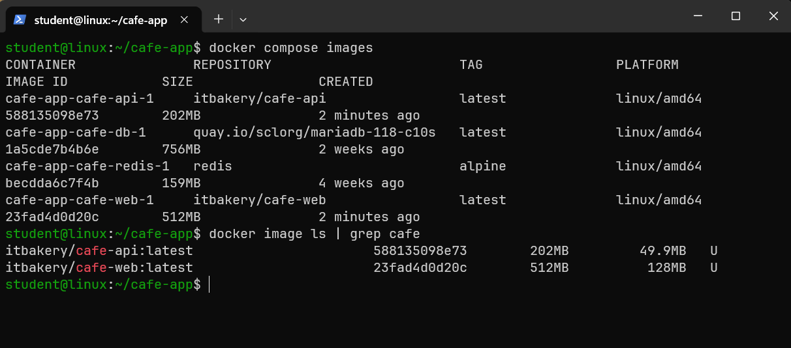
Step 7: Verify the application
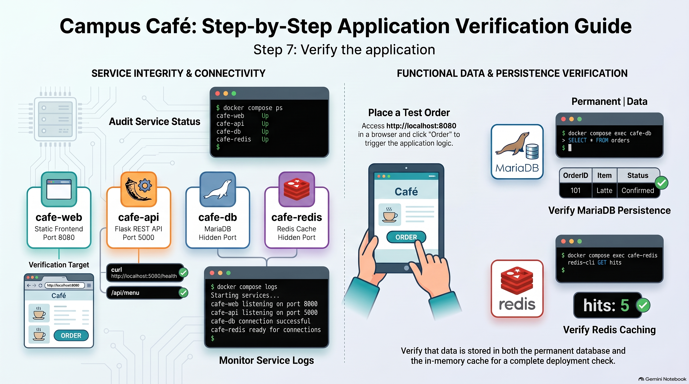
# Health endpoint
curl http://localhost:5000/health
# Menu
curl http://localhost:5000/api/menu
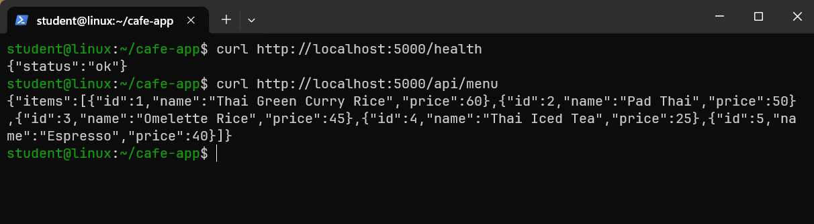
# MariaDB -> order history
docker compose exec cafe-db mariadb -u cafe_user -pcafe_secret cafe_db \
-e "SELECT * FROM orders;"
# Redis -> total orders served
docker compose exec cafe-redis redis-cli GET hits
Open Browser
Open a browser on your own machine to http://<server-ip>:8080 and place an order (click Order).
Verify the order was saved twice — once in MariaDB (permanent) and once in Redis (counter):
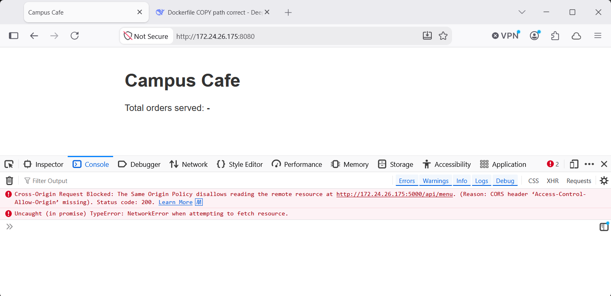
Fix Error
Fix Error by uncommment line 6, 9
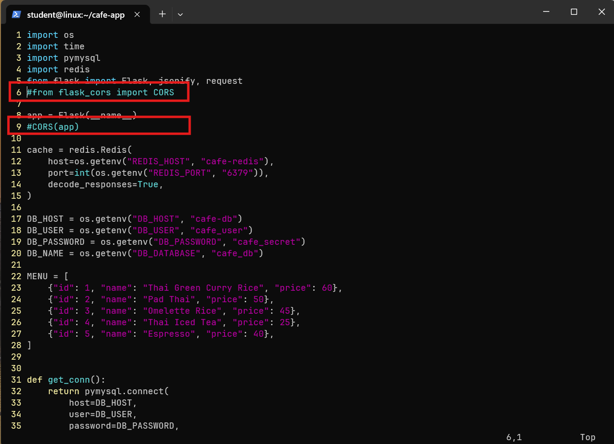
after uncommend
docker compose down -v
docker compose up -d --build
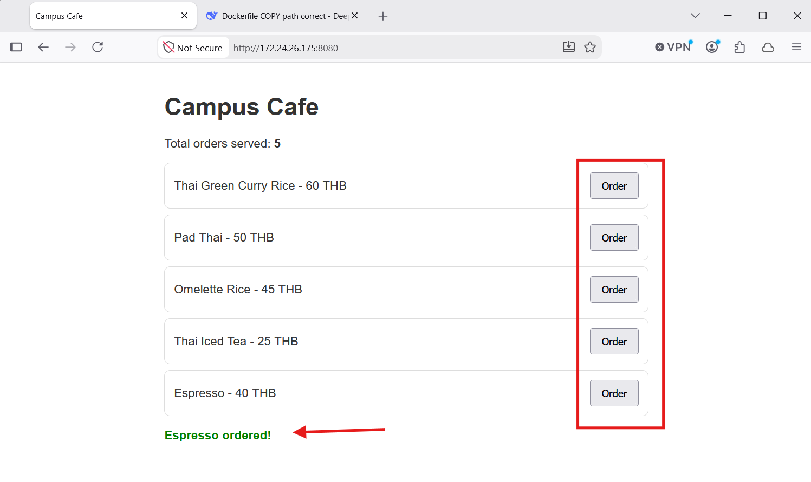
Query Database
Look for the container running MariaDB and the one running Redis. Let's assume they're named mariadb and redis — adjust to match yours.
docker compose ps
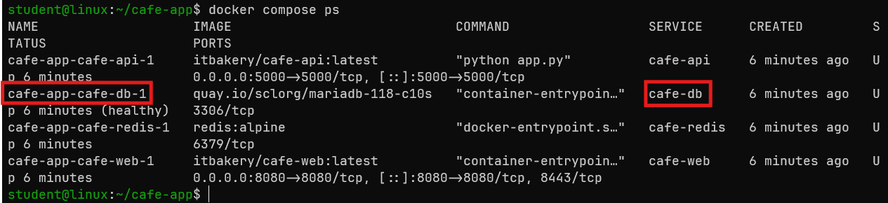
- Rememnber in docker compose use service name to reference when connect to database
docker compose exec cafe-db mariadb -u cafe_user -pcafe_secret cafe_db -e "SELECT * FROM orders;"
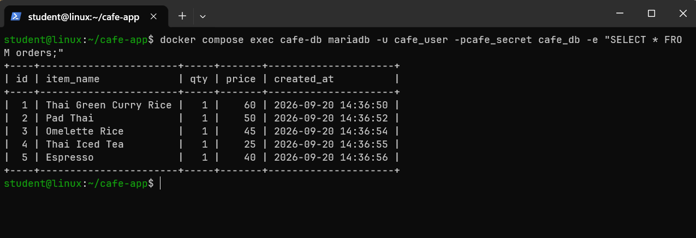
7.3 Part B - Ship to Docker Hub
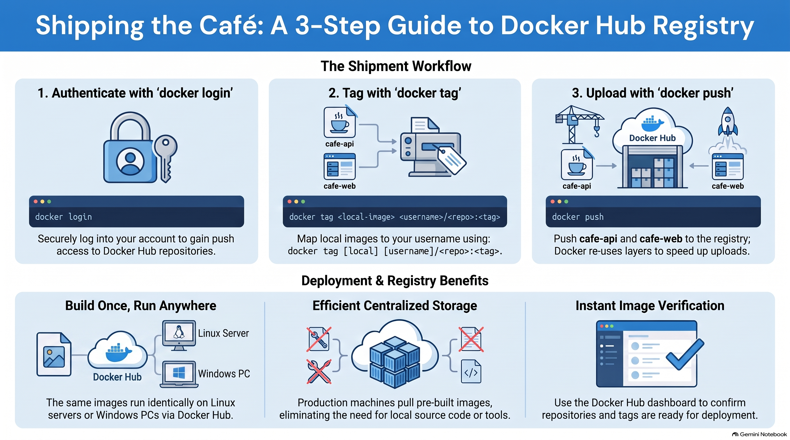
Step 1: Login
docker login
# Username + password (or access token)
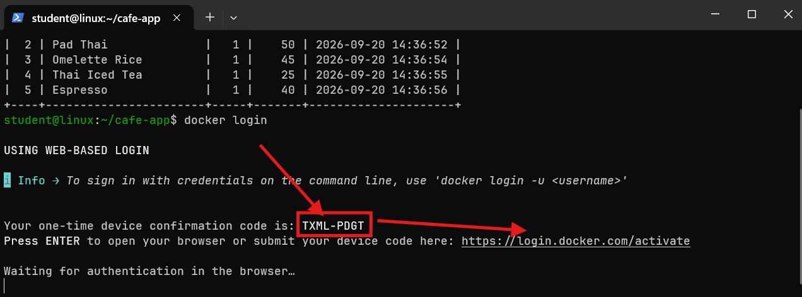
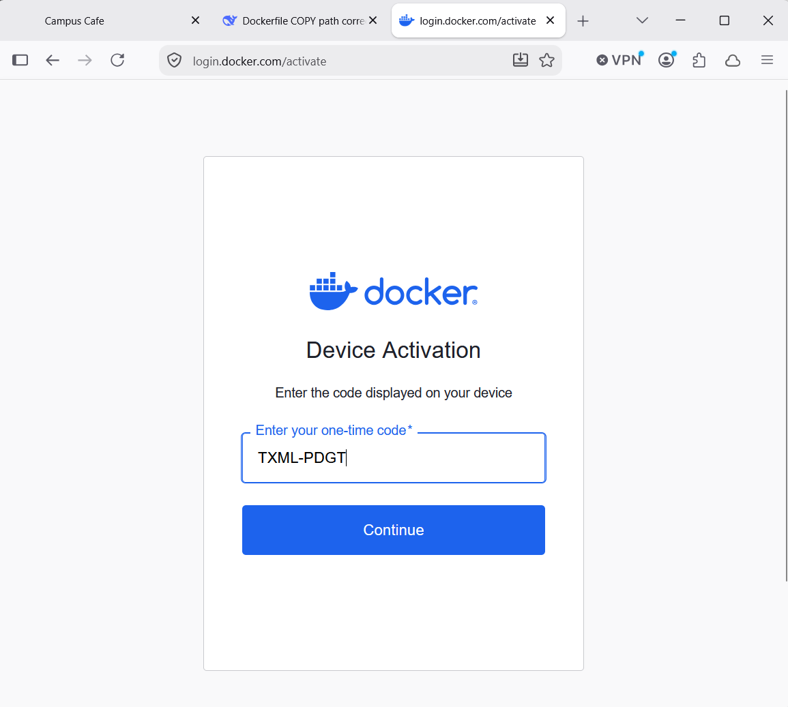
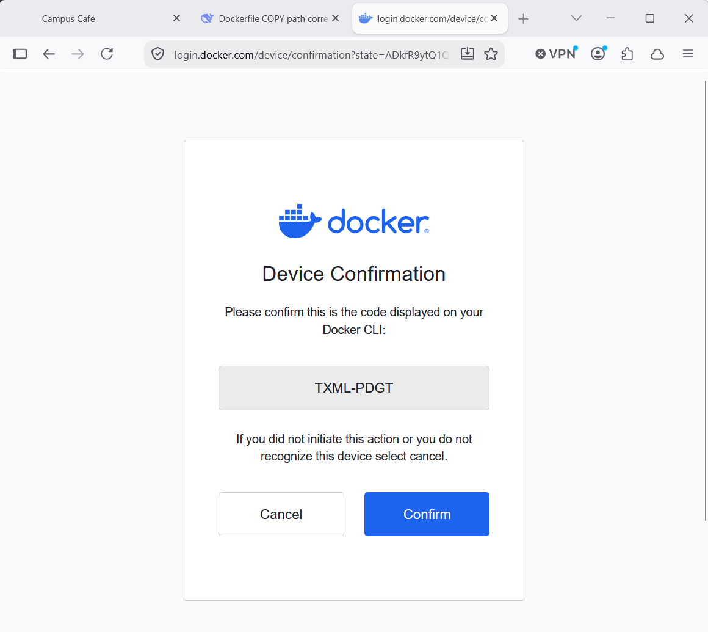
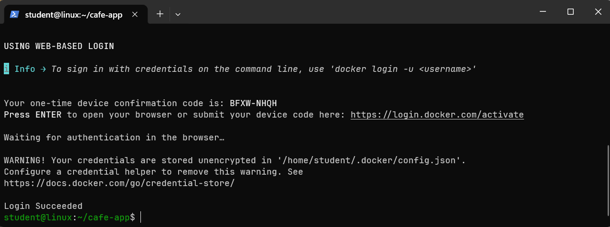
Note: A successful login shows
Login Succeeded(Chapter 6, Lab 3.3).
Step 2: Push your two custom images
Your images are already tagged with your username because of the image: key in compose. Check first:
docker image ls | grep cafe
Then push (replace <your-dockerhub-username>):
docker push <your-dockerhub-username>/cafe-web:latest
docker push <your-dockerhub-username>/cafe-api:latest
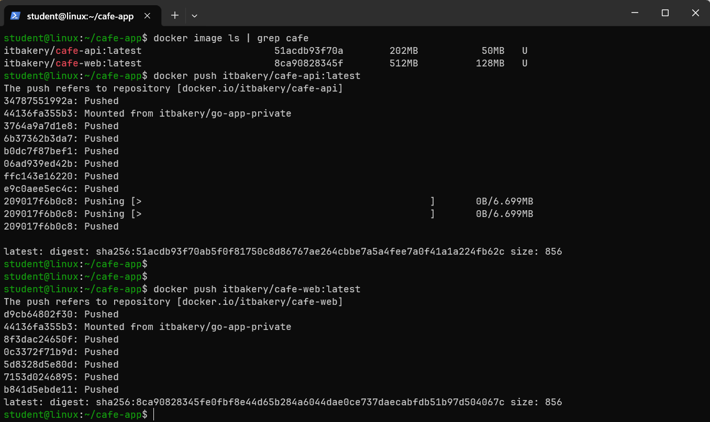
Note: Only the new layers are uploaded. The base layers (
httpd-24-c10s,python:3.12-slim) are re-used from their original registries — your push is small.
Step 3: Verify on Docker Hub
Open https://hub.docker.com/repositories and confirm both repositories and their latest tags.
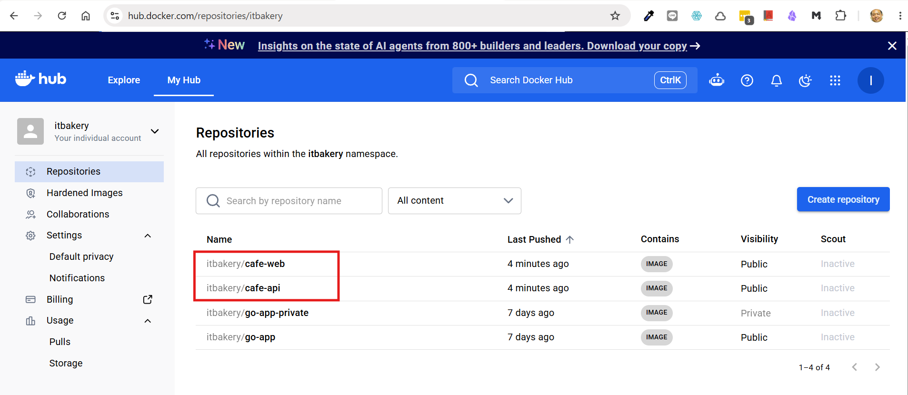